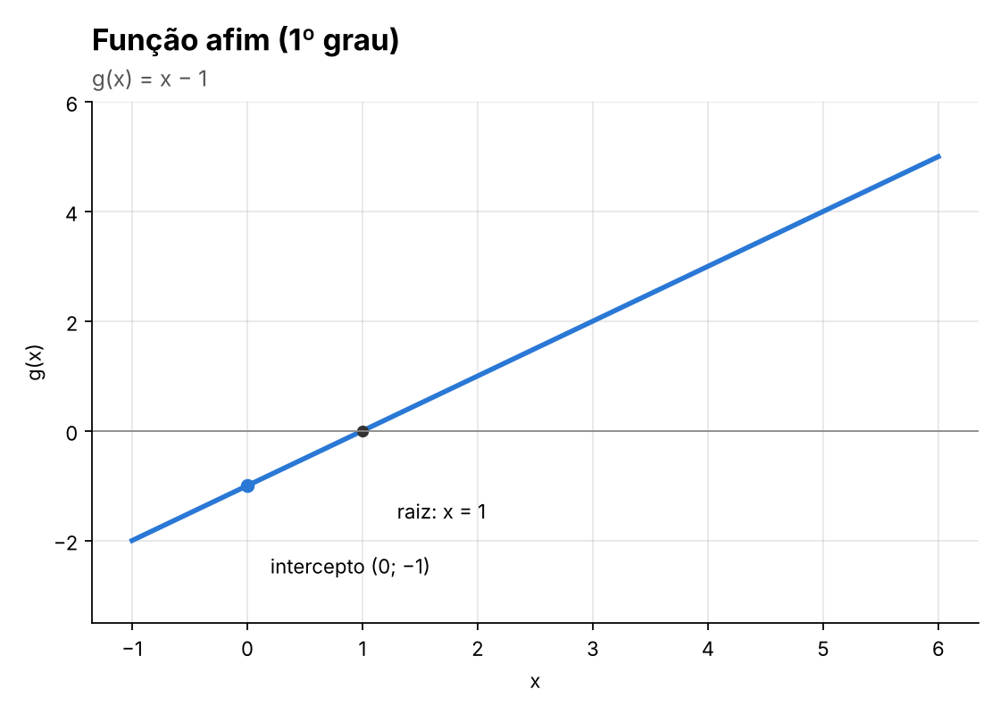
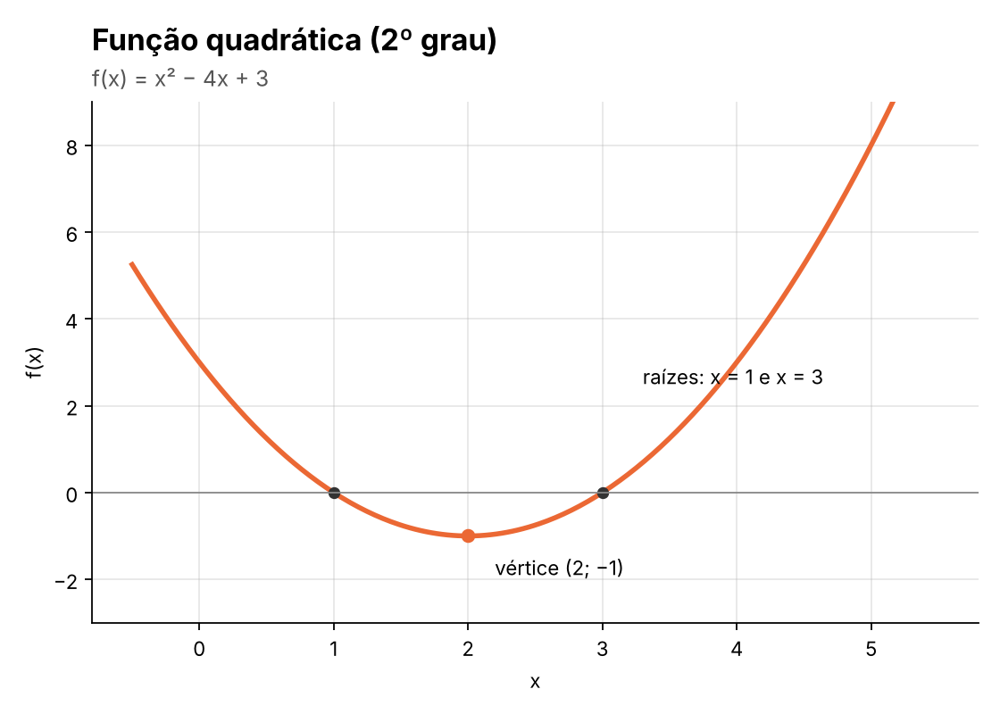
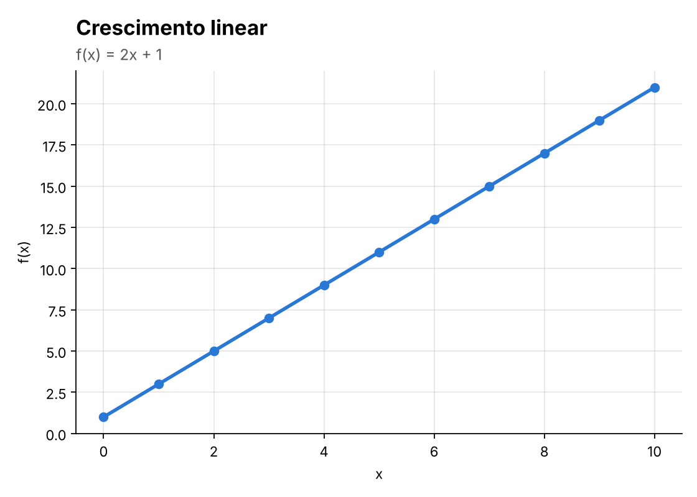
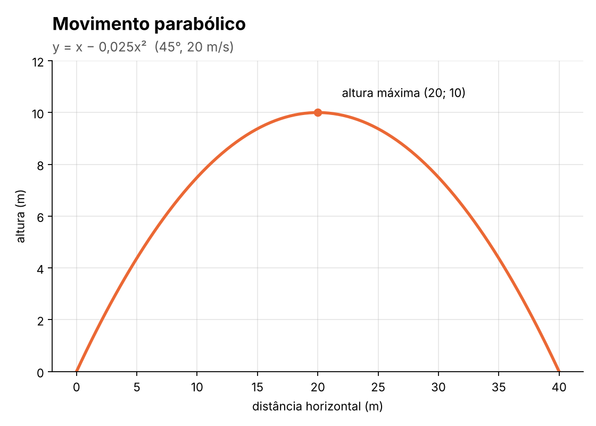
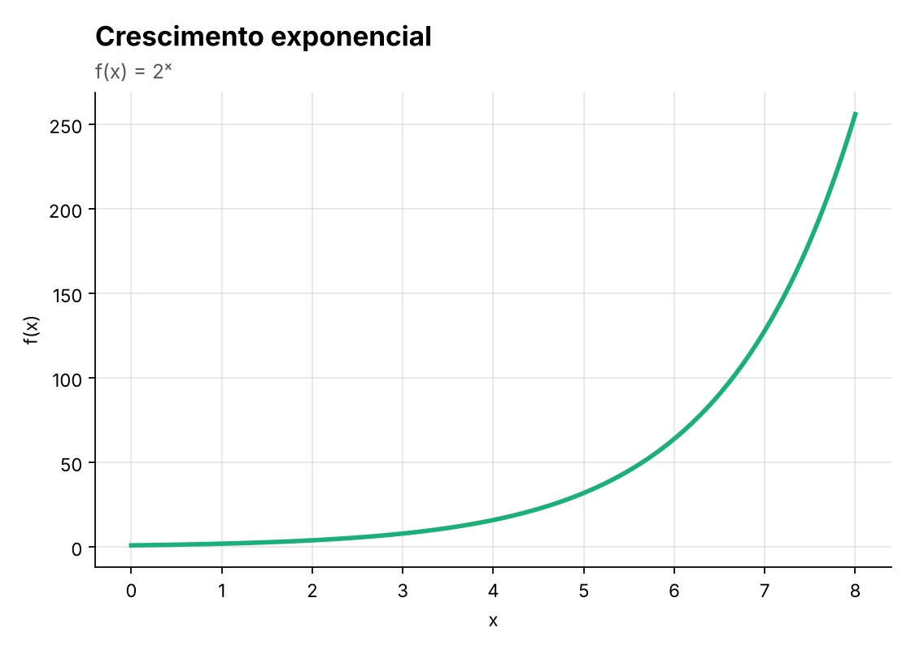
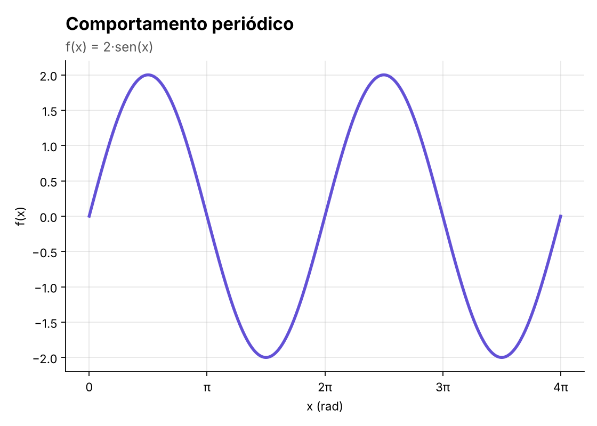

O Universo das Funções Matemáticas
No Ensino Médio, o estudo das funções descreve como duas grandezas se relacionam de forma previsível. Uma função é uma regra matemática que associa cada elemento de um conjunto inicial (chamado de Domínio) a um único elemento de um conjunto final (chamado de Contradomínio). Compreender essas relações é essencial para interpretar fenômenos físicos, variações financeiras e comportamentos biológicos.
Função Afim (ou Primeiro Grau)
A função afim é representada pela lei de formação f(x) = ax + b, onde os coeficientes a e b são números reais e a deve ser diferente de zero. O coeficiente a determina a taxa de variação (declividade da reta), enquanto b representa o coeficiente linear, indicando onde o gráfico corta o eixo vertical Y.
No cotidiano, a função afim modela situações simples de crescimento ou decrescimento constante, como o valor final de uma corrida de táxi (composto por uma taxa fixa mais um valor por quilômetro rodado) ou o consumo linear de combustível de um automóvel na estrada.

Função Quadrática (ou Segundo Grau)
Definida pela lei de formação f(x) = ax² + bx + c (com a diferente de zero), a função quadrática caracteriza-se pela presença de uma variável elevada ao quadrado. O comportamento gráfico dessa função não é uma linha reta, mas sim uma curva simétrica chamada parábola. Se o coeficiente a for positivo, a concavidade estará voltada para cima; se for negativo, para baixo.
Essa função possui papel fundamental no estudo da balística e de movimentos uniformemente variados na Física. Por exemplo, a trajetória parabólica descrita por uma bola de futebol ao ser chutada para o alto, ou o cálculo do ponto máximo de lucro e receita de uma empresa através das coordenadas do vértice da parábola.

Galeria Visual de Funções
Aplicações gráficas dos principais comportamentos matemáticos estudados em sala de aula.

Crescimento Linear

Movimento Parabólico

Crescimento Exponencial

Comportamento Periódico
Referências Consultadas
- DANTE, Luiz Roberto. Matemática: Contexto & Aplicações. Volume 1. São Paulo: Ática, 2016.
- IEZZI, Gelson; MURAKAMI, Carlos. Fundamentos de Matemática Elementar. Vol. 1: Conjuntos e Funções. São Paulo: Atual, 2013.
- Ministério da Educação (MEC). Base Nacional Comum Curricular (BNCC). Área de Matemática e suas Tecnologias, 2018.